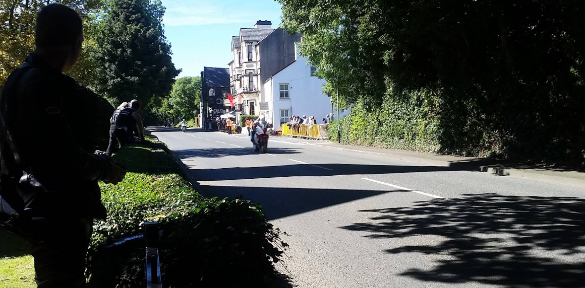

TT Races & Biker Hub
Situated along the legendary TT course, the Sulby Glen Hotel is a beloved stop for riders. Our roadside terrace provides a front-row seat to the action, while secure parking and a drying room make race days easy.

A Home for Riders
Join fellow enthusiasts to swap stories, fuel up with hearty fare, and celebrate the spirit of the races in true Manx style. We're proud to be part of the TT tradition, welcoming riders and spectators year after year.